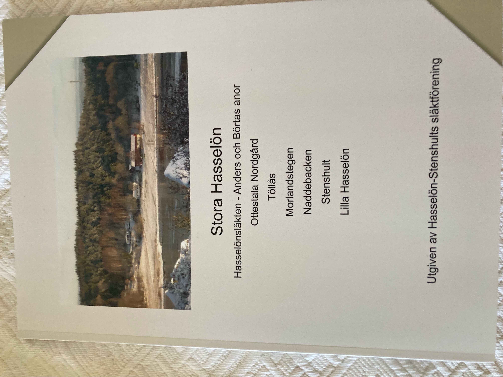
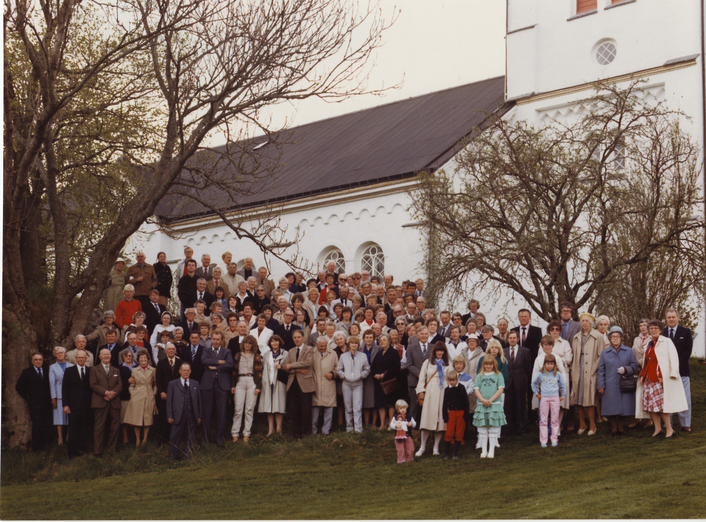

En förening för ättlingar till Anders och Börta — sedan 1980
Vi är ättlingar till Anders Olsson och Börta Persdotter, som levde och verkade på Stenshult och Hasselön under 1700-talet. Föreningen samlar oss för att minnas, forska och umgås.

Ny bok om Hasselönsläkten!
Kontakta Elisabeth Karlsson, 073-557 54 08 eller Helen Olsson, 070-633 71 74 om du vill beställa ett exemplar.
Anders Olsson föddes i Stala socken 1719. År 1756 gifte han sig med Börta Persdotter från Resteröds socken, där hon var född 1733. Stenshult var hennes släktgård, och när hennes föräldrar dog ärvde hon den.
Anders och Börta bodde på Stenshult i flera år och deras fyra första barn föddes där — Helena 1757, Olof 1764, Sven 1766 samt Annika 1773. År 1777 flyttade familjen till Hasselön, och där föddes minstingen Kristina 1779.
Hur de såg ut vet vi knappast, men troligtvis hade Börta en svart brudklänning, som traditionen bjöd. I föreningens arkiv finns ett gammalt kartongfoto med ett stiligt brudpar — om du känner igen dem, hör gärna av dig!
Alla som är ättlingar till Anders och Börta kan vara medlemmar. Kontakta Sven Andersson för att gå med.
Sven Andersson har lagt ner ett oerhört arbete på vårt släktregister. Det finns tillgängligt på USB-minne och de 10 första generationerna finns publicerade på hemsidan.
Köp USB-minne
Mats Blomberg · 070-209 2454 · mats(at)plop.se
Ny: 150 kr · Uppdatering: 50 kr
Utforska vår interaktiva släktapp och se hur du är kopplad till Anders och Börta.
Öppna släktregistret →Arvid Abrahamsson var en av initiativtagarna till att vår släktförening kom till. Arvid var son till August Abrahamsson från Grindsby i Myckleby och Josefina Johansdotter från Töllås i Torp. Arvid och hans släktingar på Augusts sida hade en släktträff och då kom man på att många av dessa var släkt även på Josefinas sida.
De beslutade därför att leta upp släktingar även på Josefinas håll och detta ledde till att många av oss på våren 1979 inbjöds till en sammankomst den 19 maj 1979. 175 släktingar hörsammade inbjudan och vi samlades till kaffe i Kyrkebyns gamla skola som numera är Torps församlingshem. Efter en andaktsstund, hållen av Arvids bror kyrkoherde Evert Grindsjö, i Torps kyrka följde en måltid på Turisthotellet i Henån, eller Henåns värdshus som det hette då. Idag är det en vårdcentral.
Alla deltagarna tyckte att det varit en mycket lyckad sammankomst. Många ganska nära släktingar som kommit ifrån varandra beslöt nu att fortsätta träffas.

Träff i Stala 1983 · Foto: Stala 1983
På vintern efteråt hade vi en kurs i släktforskning och fann snart att vi alla hade samma gubbar och gummor bakåt i släktleden. Det beslutades då att vi skulle försöka att bilda en släktförening och Arvid på Skräppås var nog den mest pådrivande kraften.
I februari 1980 samlades vi några stycken och bildade en interimstyrelse. En inbjudan utgick till de släktingar som ville vara med, att komma till ESSO i Varekil den 19 april 1980. De som inte hade tillfälle att närvara ombads meddela sitt intresse av att bilda förening.
Så bildades då Hasselön-Stenshults släktförening. Styrelse utsågs och stadgar antogs. Man beslutade att hålla årsmöte på våren 1981 och därefter vartannat år. Det första årsmötet hölls i Stenshults föreningslokal. Det inleddes med andaktsstund i Torps kyrka och därefter kaffe i Stenshult, varefter förhandlingarna följde. Härefter kunde medlemmarna umgås och prata med varandra medan det dukades fram middag. Samvaron slutade när medlemmarna började ta farväl och åka hem. Denna ordning för årsmötet har sedan hållits lika i alla år.
En dag tyckte några medlemmar att det blev för långt emellan träffarna och styrelsen har sedan dess kallat till höstmöte, dit man kan komma några timmar. Man tar själv med sig det man vill ha att äta och dricka så det behövs ingen anmälan.
Tyvärr har medlemsantalet gått ned av naturliga skäl. Jag tror nämligen inte att någon drar sig för medlemsavgiften för den har i alla år varit väldigt låg. För att inte tappa i antal medlemmar så vi till slut försvinner måste vi berätta för och locka in våra barn i gemenskapen för de yngre som kommit med har alla tyckt att det varit roligt att delta.
Numera kan man ju släktforska med olika datorprogram och vi hoppas och tror att vi härigenom skall få flera ungdomar med oss. Man skall dock inte tro att man genom att bara trycka på en knapp lätt kan få fram en hel antavla. Nej man måste fortfarande försöka tyda kyrkböckerna. Det går dock lättare och fortare att leta fram dem med datorns hjälp.
Under vinterhalvåret är det öppethuskvällar varje onsdag mellan 18.00 och 21.00 då man kan få hjälp av erfarna forskare. När man blivit varm i kläderna kan man forska på egen hand när biblioteket är öppet.
— Karin Wetterström
Hasselön-Stenshults släktförening bildades 1980 och alla som är ättlingar till Anders och Börta kan vara medlemmar. Vi träffas varje år för att umgås och ha trevligt.
Vartannat år är det en större träff med årsmötesförhandlingar. Det år utan årsmöte har vi en sommarträff med knytkalas — föreningen brukar bjuda på kaffe med dopp.
Vi ser att vi blir allt färre, så försök att ta med era barn och barnbarn i gemenskapen!
Håll utkik här eller kontakta oss nedan — vi hör av oss när tid och plats är satt.